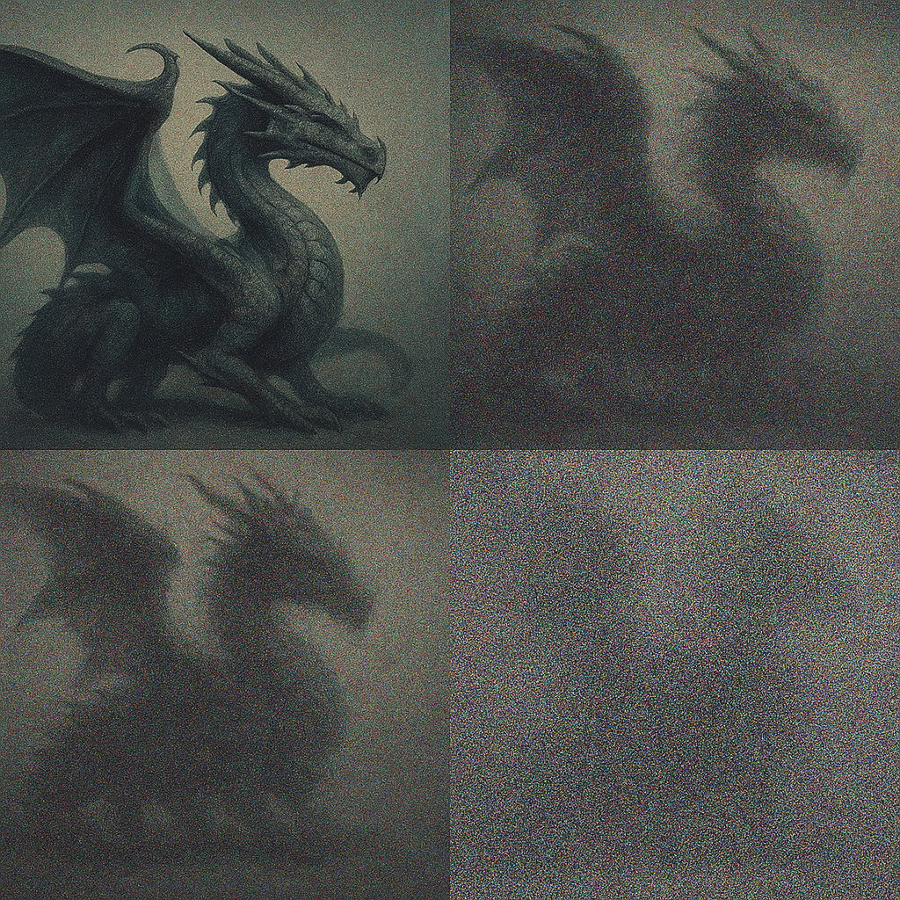

Some notes on diffusion
AI was used for research and to generate LaTeX equations
Motivation
Many people know diffusion as the magic behind AI models that generate images and videos from text prompts. While diffusion is a powerful modeling paradigm, it can be incredibly daunting to jump into the diffusion literature due to the sheer volume of mathematics in a typical paper. Surprisingly, despite the mathematical complexity behind the derivation of modern diffusion techniques, the core training objective for standard Denoising Diffusion Probabilistic Models (DDPM) is simple: just predict the noise. This simplicity makes it easy to ignore why the objective takes that form.
In this post, I’ll walk through a basic derivation of the loss used for DDPM which was the first diffusion formulation that “worked” and is the basis for most subsequent diffusion related work. I skip the most egregiously tedious bits of the algebra since it adds little to our understanding. Much of the math can later be re-used for other forms of diffusion like discrete diffusion.
A very brief and incomplete history of diffusion modeling
- Diffusion models originated with Sohl-Dickstein et al. (2015) who introduced the diffusion framework but the approach was computationally expensive and didn’t produce competitive results when compared with the predominant generative modeling paradigm of Generative Adversarial Networks (GANs).
- Ho et al.’s DDPM paper (2020) demonstrated significantly better image generation; however, sampling required thousands of sequential steps making it very slow. The results were still not competitive with GANs.
- Song et al.’s DDIM paper (2021) showed you could sample from DDPM models with far fewer steps which made them much faster and more practical.
- Stable Diffusion and DALLE-2 were released (~2022) and were better than GANs.
Since then diffusion (and variants) has become the predominant generative modeling approach for many domains which makes it worth understanding in some detail.
What is diffusion mathematically?
Diffusion defines an iterative process that takes data to noise. This process is Markov in this post (though it does not need to be as is the case in the DDIM paper) and is known as the forward (noising) process which is denoted as \(q(x_t \mid x_{t-1})\). Starting with clean data \(x_0\), we apply this process \(T\) times (or an infinite number of times in the continuous case) to end up with a sequence of progressively noiser data \(x_0, \dots, x_T\). If \(T\) is large, we will end up with pure noise (i.e. \(x_T\) is noise).

We then train a model, \(p_\theta(x_{t-1} \mid x_{t})\) that reverses this process (i.e. predicts a slightly less noisy version of its input). We sample (e.g. generate images) from this model (roughly speaking) by starting from pure noise and repeatedly removing what the model thinks is noise.
Mathematically, the joint distribution (i.e. the probability that we see a particular sequence of noised \(x\)’s) is given by:
\[ q(x_{1:T} \mid x_0) = \prod_{t=1}^T q(x_t \mid x_{t-1}) \]
To make this more concrete, for diffusion using the DDPM approach, we define each transition as adding a small amount of Gaussian noise:
\[ q(x_t \mid x_{t-1}) = \mathcal{N}\!\big(x_t; \sqrt{1 - \beta_t}\,x_{t-1},\, \beta_t I\big) \tag{1}\]
where \(\beta_t \in (0, 1)\) (“the noise schedule”) is how much noise is added for a given step. Initially, at \(T=0\) (when \(x_t\) is a clean data sample), \(\beta_t\) is 0 (i.e no noise) and at the end of the sequence, it is 1 (i.e. all noise). It’s woth noting that if we do a bit of straightforward algebra, we can derive a formula for \(q(x_t \mid x_0)\). \[ q(x_t \mid x_0) = \mathcal{N}\!\big(x_t;\, \sqrt{\bar{\alpha}_t}\,x_0,\,(1 - \bar{\alpha}_t) I\big) \quad \text{with } \bar{\alpha}_t = \prod_{s=1}^t (1 - \beta_s) \tag{2}\]
This is useful because it means we can compute the forward process for a given timestep without computing intermediate steps. This is nice if you want a practical training algorithm as we’ll see later.
Similarly, our model that will learn the reverse Markov chain can be written as:
\[ p_\theta(x_{0:T}) = p(x_T)\prod_{t=1}^T p_\theta(x_{t-1} \mid x_t) \]
Note that \(p(x_T)\) is the noise distribution that we start from when going from noise to data. In the case of DDPM, this is just a standard normal.
The Diffusion Loss
As is often the case in machine learning, we train by maximizing the log-likelihood of the data. Thus we need \(\log p_\theta(x_0)\), which we can obtain by integrating out \(x_1, \dots, x_T\):
\[ \log p_\theta(x_0) = \log \int p_\theta(x_{0:T}) \, dx_{1:T} = \log \int p_\theta(x_T) \prod_{t=1}^T p_\theta(x_{t-1} \mid x_t) \, dx_{1:T}. \] This is intractable because \(p_\theta(x_0)\) marginalizes over all trajectories (i.e. all sequences of noised \(x\)’s). Thus, we we multiply by 1, in the form of the forward (noising) process \(q(x_{1:T} \mid x_0)\) to turn this into an expectation:
\[ \log p_\theta(x_0) = \log \int q(x_{1:T} \mid x_0) \frac{p_\theta(x_{0:T})}{q(x_{1:T} \mid x_0)} \, dx_{1:T} = \log \mathbb{E}_{q(x_{1:T} \mid x_0)}\!\left[ \frac{p_\theta(x_{0:T})}{q(x_{1:T} \mid x_0)} \right]. \] Optimizing the log of an expectation is not easy to compute and so we use the standard trick of applying Jensen’s inequality (\(\log \mathbb{E}_q[f(x)] \ge \mathbb{E}_q[\log f(x)]\)) to get something that is simple to train with: :
\[ \log p_\theta(x_0) \ge \mathbb{E}_{q(x_{1:T} \mid x_0)}\!\left[ \log p_\theta(x_{0:T}) - \log q(x_{1:T} \mid x_0) \right]. \]
This gives us what is known as the Evidence Lower Bound (ELBO). Skipping some algebra (use the Markov factorizations of \(p_\theta\) and \(q\), regroup, and use Bayes) we end up with:
\[ \mathcal{L}_{\text{ELBO}} \;=\; \mathbb{E}_{q(x_{1:T}\mid x_0)}\Big[ \underbrace{D_{\mathrm{KL}}\!\big(q(x_T \mid x_0)\,\|\,p(x_T)\big)}_{\text{prior term}} \;+\; \sum_{t=2}^{T} \underbrace{D_{\mathrm{KL}}\!\big(q(x_{t-1}\!\mid x_t,x_0)\,\|\,p_\theta(x_{t-1}\!\mid x_t)\big)}_{\text{denoising terms}} \;-\; \underbrace{\log p_\theta(x_0 \mid x_1)}_{\text{reconstruction term}} \Big]. \]
Maximizing this lower bound is equivalent to minimizing the negative ELBO which we use for our training loss. This form of the ELBO is NOT specific to any particular form of diffusion. It can be used for discrete or continuous diffusion. Often the only term in this loss that we care about is middle one (denoising terms) because we can (usually) argue that the the first term is 0 and that the last term can be ignored (with exceptions).
In particular, the prior term measures how close \(q(x_{1:T} \mid x_0)\) (what distribution do we end up at if we add noise for a long time?) is to \(p(x_T)\) (the distibution that we start denoising from). In the case of DDPM (if you choose your noise schedule appropriately), \(q(x_{1:T} \mid x_0)\) becomes a standard normal in the limit of large \(T\). So if you choose \(p(x_T)\) to also be a standard normal, this term is 0.
The reconstruction term just measures how well the model can reconstruct the clean data from the last denoising step. In the case of large \(T\), \(x_1\) should be clean data plus a miniscule amount of noise. Thus, it can be argued that its contribution to the loss is negligible (with caveats).
The denoising terms measure how well the model can remove noise at a given step.
Now let’s think about what this loss means. At first glance, the expectation \(\mathbb{E}_{q(x_{1:T}\mid x_0)}\) looks prohibitively expensive, since it appears to require sampling entire diffusion trajectories for each data point. However, because of the Markov structure of the forward process, each term in the KL summation depends only on a single timestep.
Specifically, each individual KL term uses the conditional \(q(x_{t-1}\!\mid x_t,x_0)\) which is the distribution of the next less noisy state (\(x_{t-1}\)) given both the original data \(x_0\) and a noisy version \(x_t\). This distribution has a closed form for DDPM. And if we’re designing a novel diffusion process (say for discrete diffusion), we can choose our forward process such that it is tractable. Namely, using the Markov property \(q(x_t \mid x_{t-1}, x_0) = q(x_t \mid x_{t-1})\) and Bayes, we get
\[ q(x_{t-1} \mid x_t, x_0) = \frac{q(x_t \mid x_{t-1})\, q(x_{t-1} \mid x_0)}{q(x_t \mid x_0)} \tag{3}\]
Thus if we choose our noising distribution such that we can compute \(q(x_{t} \mid x_0)\) efficiently, we can compute \(q(x_{t-1} \mid x_t, x_0)\) and perhaps learn a model.
The DDPM loss
Fully deriving this requires an enormous amount of rather un-illuminating algebra. So I’ll highlight the basic idea.
- We want \(q(x_{t-1} \mid x_t, x_0)\) (Equation 3) which is a product of two Gaussians that we know via Equation 1 and Equation 2. We can ignore the denominator since it’s just a normalizing factor.
- We write out the product of the PDFs for \(q(x_{t-1} \mid x_0)\) and \(q(x_t \mid x_{t-1})\) which can both be expressed in terms of \(x_{t-1}\).
- We show that this product is normal with some mean and variance by completing the square.
- Since that we know Equation 3 is a Gaussian with some mean and variance, it’s logical to express our \(p_\theta\) (the model that we’re learning) as model that predicts the mean of a Gaussian with the same variance found in 3.
- The KL divergence between two normal distributions is proportional to the L2 norm of the difference between their means which we could use as a training loss but in practice does not work very well.
- Instead, we use what is known as the reparameterization trick which lets us write the mean as as a noise term plus the current noised datapoint. When we do this, our loss reduces down to an L2 loss between the noise added to a data point and what the models thinks is the noise added. Thus, we end up with an extremely intuitive loss:
\[ \mathcal{L} = \mathbb{E}_{x_0,\epsilon,t} \big[ \|\epsilon - \epsilon_\theta(x_t,t)\|^2 \big]. \]
Technically, we weight different timesteps differently in the full ELBO so this expectation should have a time dependent weight. However, in practice (and what the DDPM paper found) was that uniform weighting works well.
Thus, the training algorithm boils down to:
- Sample a clean data point \(x_0 \sim q(x_0)\),
- Pick a random timestep \(t \sim \text{Uniform}\{1,\dots,T\}\),
- Generate a noisy version using the forward process: \[ x_t = \sqrt{\bar{\alpha}_t}\,x_0 + \sqrt{1 - \bar{\alpha}_t}\,\epsilon, \quad \epsilon \sim \mathcal{N}(0,I), \]
- Train the model to predict \(\epsilon\)
Next steps
In the interest of not making this post longer and denser, I’ve skipped a ton of stuff. Further reading could include:
- Rigourously understanding the generation process
- How the noise schedules work
- The connection to stochastic differential equations
- DDIM (Denoising Diffusion Implicit Models) which improves upon DDPM and allows for fewer step sampling
- Classifier free guidance
- Latent diffusion models
- Flow matching
References
Sohl-Dickstein, J., et al. (2015). Deep Unsupervised Learning using Nonequilibrium Thermodynamics. arXiv link
Ho, J., Jain, A., & Abbeel, P. (2020). Denoising Diffusion Probabilistic Models (DDPM). arXiv link
Song, J., Meng, C., & Ermon, S. (2021). Denoising Diffusion Implicit Models (DDIM). arXiv link
MIT 6.S184: Generative AI with Stochastic Differential Equations. course link
Stanford CS236: Deep Generative Models. course link